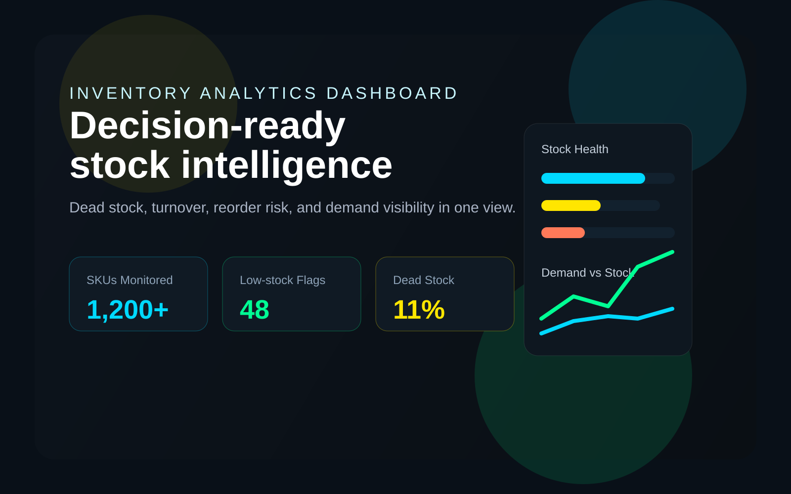
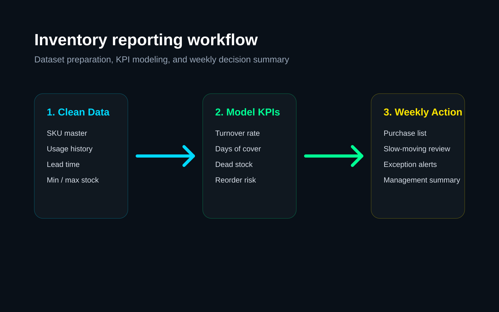
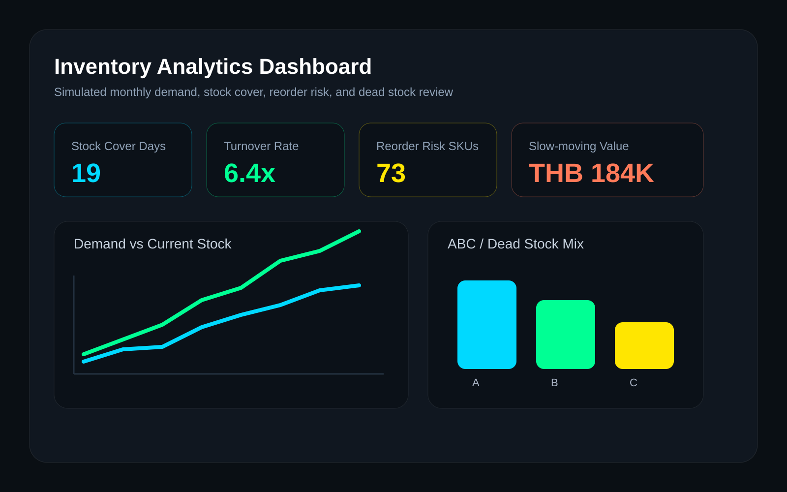

Problem
Inventory teams often have stock data, but not a clear view of dead stock, reorder risk, and which items deserve attention first.
Case Study
A portfolio project created to demonstrate how I would support an Inventory Reporting & Analytics role: turning stock data into actionable KPI views, weekly summaries, and exception-based decision making.
1,200+
Simulated SKUs
12 Months
Usage and demand history
6 KPIs
Built for weekly decisions

Problem
Inventory teams often have stock data, but not a clear view of dead stock, reorder risk, and which items deserve attention first.
Approach
Build a reporting layer around demand history, stock on hand, lead time, and business rules so exceptions are visible immediately.
Outcome
A dashboard and weekly review flow that helps teams prioritize reorders, slow-moving stock, and at-risk SKUs.

The reporting layer is intentionally business-oriented: a quick KPI row, demand-vs-stock trend, and stock mix review that points the team toward action rather than passive monitoring.
